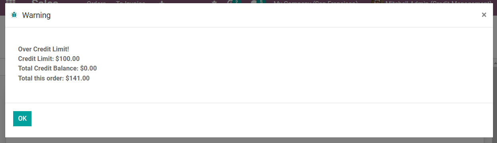

<section class="container">
    <div class="row">
        <div class="col-md-offset-1 col-md-8 mb64 mt64">
            <div>
                <h1 class="display-3">Credit Management</h1>
				<h2>Description</h2>
				This Module applies credit limits to customers and allows customers to be placed on a credit hold if the customer should be restricted from placing any new orders or receiving any additional orders.
            </div>
<br/>
            <div>
				<h2>Configuration</h2>
				<li>Upon install all customers will have a credit limit of zero. When the credit limit is "zero" there is not credit limit assigned to that contact</li>
				<li>Credit Management field can be set on on any customer contact through the "Sales & Purchase" tab</li>
				<li>Add Prepayment Test can be enabled from Sales configuration</li><br/>
				Sales -> Settings -> Enable "Add Prepayment Test" to test even if credit limit is equal to 0.
            </div>
<br/>
            <div>
				<h2>Fields</h2>
				<div class="oe_mb32 oe_demo oe_picture oe_screenshot">
					
				</div>
        </div>
<br/>
        <div>
			<h2>Credit Management on Sales Orders</h2><br/>
			<h4>Credit Limit</h4>
			<li>This will restrict confirmation of any SO that is over the value entered in this field or restrict confirmation of a combination of SO over this value if invoice has not been paid.</li>
			Note: if the credit limit is "0" on the customer contact, no credit limit will be assigned to this contact<br/><br/>
			If Credit limit = $100<br/><br/>
			<li>Sales order will not confirm if total value of sale is greater than $100</li>
			<li>Sales order will not confirm for $50 if the customer has an order already ordered and received a $60 order without payment</li>
			<div class="oe_mb32 oe_demo oe_picture oe_screenshot">
				
			</div>
			When sales order can not be confirmed the following pop-up with appear:<br/>
			<div class="oe_mb32 oe_demo oe_picture oe_screenshot">
				
			</div>
			The Sales order can be overridden by checking the boolean "Override Credit Limit" true and confirming<br/>
			<div class="oe_mb32 oe_demo oe_picture oe_screenshot">
				
			</div><br/>
			Tracking use of "Override Credit Limit"<br/>
			On the list view of all Sales orders, column named "Over Credit" will be marked true if the credit was overridden<br/><br/>
			<div class="oe_mb32 oe_demo oe_picture oe_screenshot">
				
			</div>
			<b>Total Credit Used</b> is the total:<br/><br/>
			<li>Confirmed sales orders</li>
			<li>Sales orders with items partially or completely delivered</li>
			<li>Sales orders with Draft invoice(s)</li>
			<li>Sales orders with posted and not paid invoice(s)</li><br/>
			Note: this field is automatically calculated
        </div>
<br/>
        <div>
			<h4>Credit hold</h4>
			If Credit Hold field is True<br/><br/>
			Sales<br/><br/>
			<li>While choosing the customer in a sales order a warning message is displayed. The user will not be able to confirm any new sales orders for any amount.</li>
			<li>Pop-up message will appear</li><br/>
			<div class="oe_mb32 oe_demo oe_picture oe_screenshot">
				
			</div>
			<li>This can not be overridden. Only way to confirm the sales order is to remove the credit hold on the customer</li><br/>
			Delivery Order<br/><br/>
			<li>The user will not be able to confirm the delivery order or to "Mark As Todo", "Check Availability", "Recheck Availability", "Force Availability" and "Validate" for any open Delivery orders for this customer while on credit hold</li>
        </div>
<br/>
        <div>
			<h4>Has Overdue Invoices</h4>
			Will be marked true automatically when invoice(s) have not been paid by the due date.<br/><br/>
			This will not effect confirming future Sales orders<br/>
		</div>
        
<br/>
        <div>
			<h4>Override Credit Threshold</h4>
			This amount is less than the credit limit, Any Sales order that is below the "override Credit Threshold" can be confirmed even when the credit limit has been hit. If this field is zero no threshold will exist.<br/><br/>
			For example, if our credit limit is 100 and the threshold is 40.<br/><br/>
			We have $90 on credit currently and want to place another Sales order for $35 dollars.<br/><br/>
			The threshold will allow this Sales order to be confirmed<br/>
	</div>

<br/>
        <div>
			<h4>Hold Delivery Till Payment</h4>
			If true will restrict delivery until payment<br/><br/>
			This field can be set on the contact or on the Sales order<br/><br/>
			If boolean is true on the contact, boolean will be maked true on all sales orders then propagated to the Delivery order<br/><br/>
			If the boolean is marked true on the Sales order it is only true for that sales order and delivery order.<br/>
        </div>
<br/>
        <div>
			<h2>Access Rights</h2>
			On user "Manage Credit Limit", will give users the access rights (partner.credit.limit.warning) to edit the credit management field on the contact.<br/><br/>
			Access rights do not restrict the "Override Credit Limit" field on sales order.<br/>
		</div>
            
<br/>
	    <div>
			<h2>Credits</h2>
			<h4>Contributors</h4>
			<li>Sodexis &lt;<a href="mailto:dev@sodexis.com">dev@sodexis.com</a>&gt;</li><br/>
			This module is maintained by Sodexis.<br/>
		</div>
            
        </div>
    </div>
</section>
